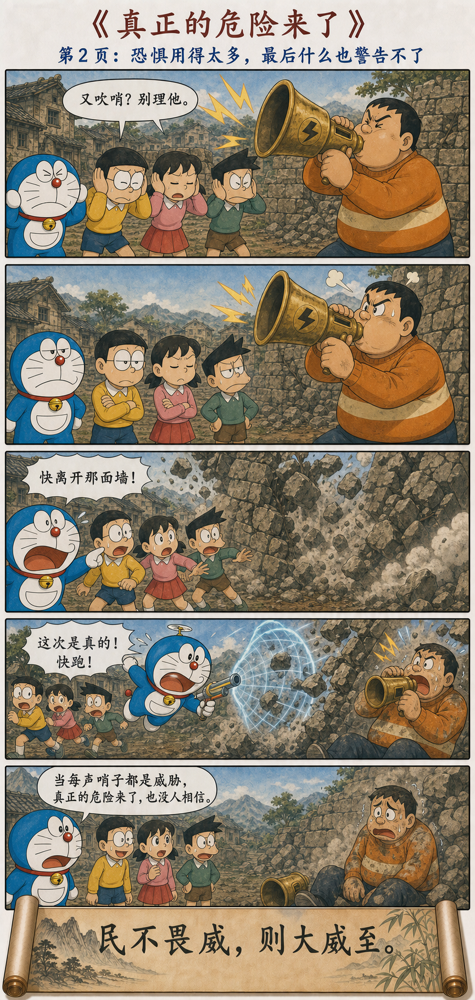
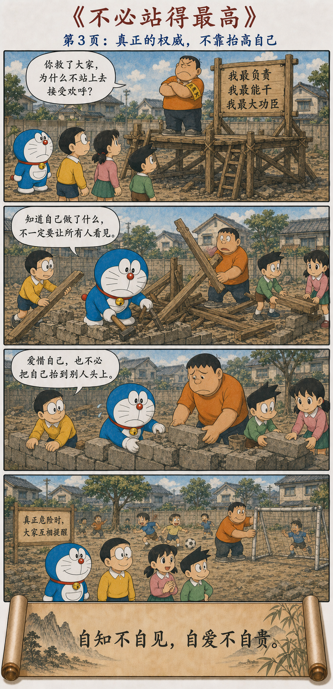

权威怎样失去作用，又怎样赢得信任
How Authority Loses Its Force—and How Trust Is Restored
民不畏威，则大威至。
无狎其所居，无厌其所生。
夫唯不厌，是以不厌。
是以圣人自知不自见，自爱不自贵。
故去彼取此。
When people no longer fear coercive authority, a greater danger arrives. Do not press upon where they dwell; do not oppress the life they live. Only by not oppressing them will one not be rejected. Thus the sage knows himself without displaying himself, loves himself without exalting himself. He leaves the latter and chooses the former.
不要用权威挤走人们赖以生活的空间
Do Not Let Authority Crowd Out the Space of Life
如果统治者不断依靠威吓，使人们连安居和生活都受到侵扰，恐惧终会超过限度。到了人们不再把威吓当回事的时候，更大的危机也就临近了。
When rulers repeatedly rely on intimidation and disturb the places where people live, fear eventually passes its limit. Once intimidation ceases to carry weight, a greater crisis approaches.
因此，不要逼迫人们的居处，不要压迫他们的生计。唯有不使人厌恶其生活，权威本身才不会被人厌弃。真正的领导者了解自己，却不急于炫耀；爱惜自己，却不把自己抬到别人头上。
Do not press upon people's dwellings or oppress their means of living. Only an authority that does not make life intolerable avoids becoming intolerable itself. A genuine leader knows himself without display and values himself without standing above others.
当所有哨声都变成威胁
When Every Whistle Becomes a Threat



害怕与信服，是两种完全不同的服从
Fear and Trust Produce Different Kinds of Obedience
胖虎第一次吹哨，大家立刻站好，看起来管理非常有效。但这种服从只依赖一个条件：人们仍然害怕处罚。它没有让大家理解规则，也没有让规则获得共同认可。
The first whistle makes everyone stand still, so management appears effective. Yet this obedience depends on a single condition: continued fear of punishment. No one understands or shares ownership of the rule.
于是，管理者若想保持效果，就必须不断提高音量、增加处罚、扩大禁止范围。表面上权威越来越强，实际上它正在消耗自己唯一的资源——人们对它的相信。
To preserve the effect, authority must raise the volume, increase punishment, and expand prohibition. It looks stronger while consuming its only resource: people's belief that it matters.
恐惧可以迅速让人停下，
却不能告诉人为什么应当同行。
Fear can quickly make people stop. It cannot show them why they should move together.
滥用警报，会毁掉真正的警报
Misusing Warnings Destroys the Warning That Matters
哨声若只在真正危险时响起，人们会立即回应；若每一件小事都被描述成危险，每一次分歧都被当成挑战，哨声便逐渐失去信息。人们听见的只剩噪音。
A whistle reserved for danger commands attention. If every small act becomes a danger and every disagreement a challenge, the whistle loses information and becomes noise.
因此“民不畏威”不只是说人们忽然勇敢反抗，也可能是权威因反复透支而失灵。真正的墙开始倒塌时，没有人再相信警告；小威的滥用，反而为大危机清除了最后一道防线。
People ceasing to fear authority need not mean sudden heroic rebellion. Authority may simply have exhausted its credibility. When the wall truly falls, no one believes the warning; repeated minor intimidation has removed the last defense against greater danger.
制度若不再容纳生活，生活就会绕开制度
When Institutions Leave No Room for Life, Life Routes Around Them
空地原本用于奔跑、交谈和游戏。规则本应减少相互伤害，使这些活动能够继续；胖虎却把“没有任何事情发生”当成管理成功，于是用红线和禁令把生活本身赶出了空地。
The vacant lot exists for running, talking, and play. Rules should reduce harm so these activities can continue. Gian mistakes the absence of all activity for successful management and drives life itself from the lot.
一项规定是否合理，不能只看它是否方便管理，还要看它给被管理者留下了怎样的生活。若遵守的代价是无法正常生存，人们迟早会隐瞒、逃避或共同忽视规定。
A rule cannot be judged only by administrative convenience. We must ask what kind of life it leaves to those governed. If compliance makes ordinary life impossible, people eventually conceal, evade, or collectively ignore it.
知道自己有能力，不必不断展示能力
Knowing One's Ability Does Not Require Constant Display
“自知”是了解自己的能力、边界和责任；“自见”则是急于把自己摆到所有人眼前，让每项工作都成为证明自己的舞台。哆啦A梦救下众人以后，没有搭建领奖台，而是把木料拿去修墙。
Self-knowledge means understanding one's abilities, limits, and responsibilities. Self-display turns every task into a stage. After the rescue, Doraemon builds no podium; he uses its timber to repair the wall.
真正有能力的人不需要把每一次决定都变成个人表演。他可以让成果被看见，却不必让自己占据成果的中心；也可以承认错误，因为自我价值不依赖永远正确。
A capable person need not turn every decision into personal performance. Results may be visible without placing the self at their center, and mistakes may be admitted because worth does not depend on permanent correctness.
自爱是珍惜自己，自贵是必须高于别人
Self-Respect Values the Self; Self-Exaltation Must Stand Above Others
老子没有要求领导者轻视自己。“自爱”保留了对自身生命、尊严与能力的珍惜；他反对的是“自贵”——必须借别人的低位，证明自己的高位。
Laozi does not ask leaders to despise themselves. Self-respect preserves care for one's life, dignity, and ability. What he rejects is self-exaltation: needing others below in order to prove oneself above.
胖虎摘下管理员袖章、弯腰搬砖，并没有失去价值。恰恰在不再要求别人仰望以后，他第一次从一个制造服从的人，变成了能够共同承担的人。
Gian loses no worth by removing the armband and carrying bricks. Only when he stops demanding admiration does he change from someone who produces obedience into someone capable of shared responsibility.
老子不是说任何权威和规则都不需要
Laozi Is Not Rejecting Every Rule or Form of Authority
旧墙倒塌时，哆啦A梦仍然立即发出警告并采取行动。真正危险需要清楚的边界、可信的信号和及时的干预。问题不在哨子本身，而在哨子是否被用来处理一切。
When the wall falls, Doraemon still warns everyone and acts immediately. Real danger requires clear boundaries, credible signals, and timely intervention. The problem is not the whistle itself, but using it for everything.
同样，“不厌其生”也不等于放任任何行为。好的规则保护共同生活，坏的规则则以保护之名占满生活。区别在于它是否与真实风险相称，是否给人留下正常行动与表达意见的空间。
Nor does protecting life mean permitting every action. Good rules protect shared life; bad rules fill life in the name of protection. The difference lies in proportionality to real risk and in preserving room for ordinary action and dissent.
让重要的信号保持稀缺，让权威回到它的用途
Keep Important Signals Scarce and Return Authority to Its Purpose
管理团队时，不要把所有问题都升级成紧急命令；教育孩子时，不要让每次提醒都变成人格否定；公共治理中，也不要把方便管理自动等同于合理。信号越强，越应该谨慎使用。
Do not turn every workplace issue into an emergency order, every correction of a child into a verdict on character, or administrative convenience into automatic legitimacy. The stronger the signal, the more carefully it should be used.
衡量权威，不只看它能否让人立即停下，也看它能否使人在没有人监督时仍愿意合作；不只看命令发出了多少，也看真正危险到来时，还有多少人愿意相信。
Measure authority not only by whether people stop immediately, but by whether they still cooperate without supervision; not only by how many commands are issued, but by how many people still believe when danger truly arrives.
不靠恐惧维持的权威，才经得起真正的危险
Only Authority Not Sustained by Fear Can Withstand Real Danger
第七十二章把政治上的威吓与个人的自我显示连在一起：越需要把自己抬高，越容易依靠压低别人来维持位置；越真正了解并珍惜自己，越不必用不断升级的威势证明存在。
Chapter 72 connects political intimidation with personal display. The stronger the need for elevation, the greater the temptation to hold others down. Genuine self-knowledge and self-respect reduce the need to prove existence through escalating force.
威吓让人暂时服从，信任让人共同承担；
高台使人仰望，行动使人愿意同行。
Intimidation produces temporary obedience; trust produces shared responsibility. A platform makes people look up; action makes them walk beside you.
原典与注释
Primary Text and Commentary
The Wang Bi edition and commentary on Chapter 72 of the Daodejing.